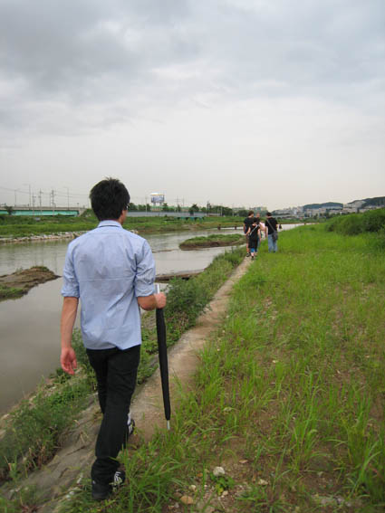
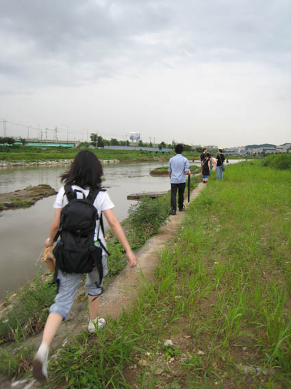
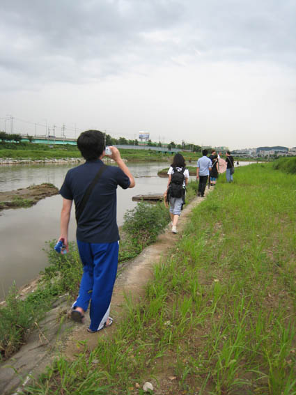

  
8/15 workshop1 - tracing (Seoksu Market + around)
We were divided into 4 groups with artists from Anyang. These are the photos of Mr. Park's group.
프레젠테이션 후 안양을 잘 아는 작가들이 인솔하는 4개의 조로 나뉘어 인근을 돌아다녀 봄.
대부분의 외국 작가들은 박관장님 팀이 됨.
Park Chn-Eyng's team - touring around Anyang River and went to a spot where three cities meet.
박찬응 관장님이 인솔하는 팀 - 3개의 도시가 만나는 싸이트에 가 봄.
2008-09-08
saptap.egloos.com 에서 옮김